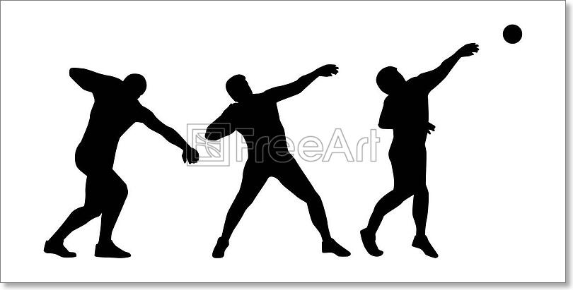

My Major
Currently I am an undergraduate at Bridgewater state university, as one may be able to infer based on the fact that I'm deisgning a website, I major in computer science. I have always had an interesting in code, so in highschool when I was finally able to take classes that involved coding it only sparked my interest further. In Highschool I took 3 computer science based classes: Web design, Game design, and Computer science principles. My favorite of those classes was the game design class in which I built a game similar to galaga.

Sports
I am currently doing track and field at Bridgewater state university, and more specifically I'm a thrower. I primarily throw shotput and discus and in rares cases if I have to I will throw hammer or weight. I did shotput and discus back in highschool, and though I originally had no intentions of doing any sport in college, I ended up deciding to basically be a walk-on for the track and field team.
